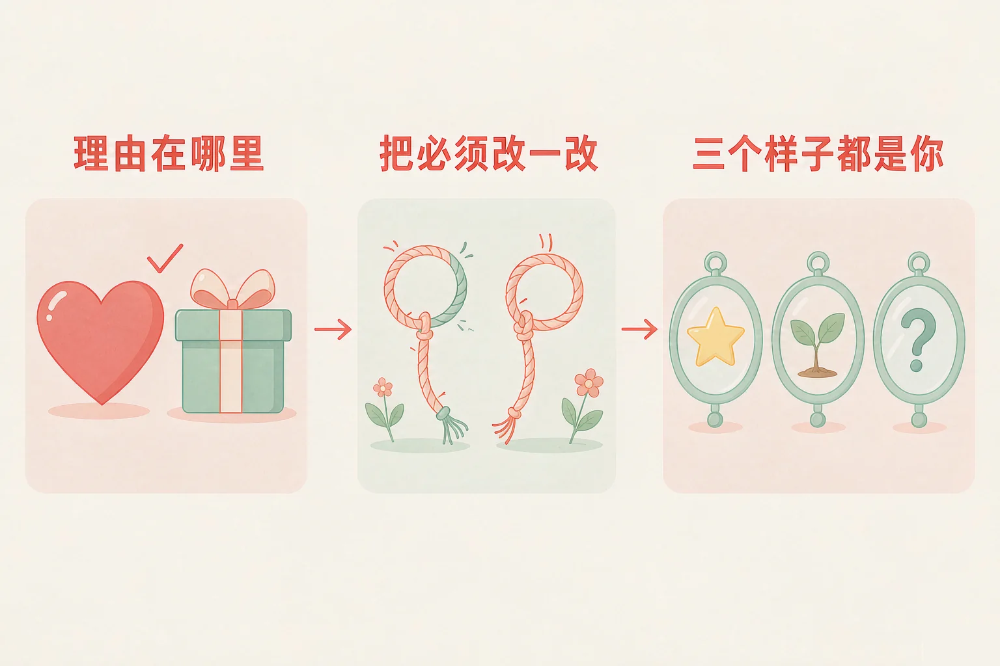
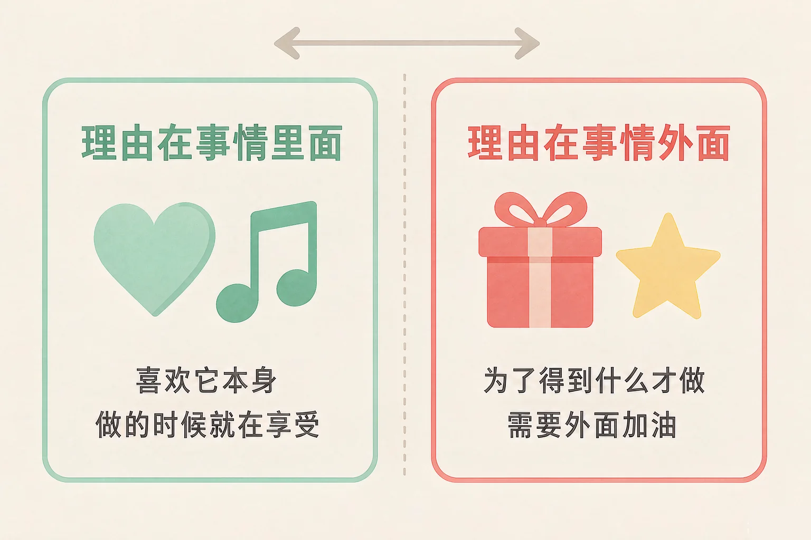
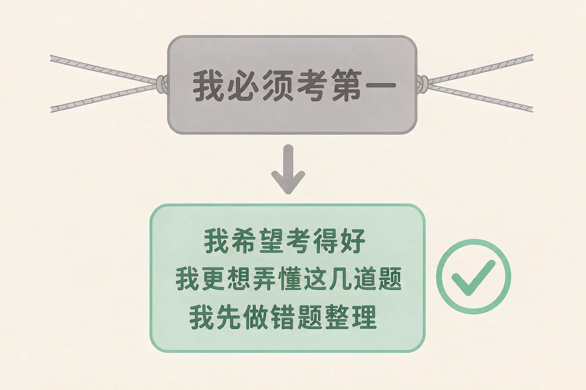

Gallery
v1.0.0 · skill v7.22.0
小学五年级 · 认识自我
心里那句「我必须考第一，考不到就完了」，一想起来就绷得紧紧的——同一件事，能不能换一个站得住的说法？

选一个你真正想知道的问题，后面的活动都会围着它转。
选择或输入后，这节课会围绕你的问题展开。
先凭直觉选一个，选完立刻看到解释——错了也没关系，正好知道要重点听哪里。
1. 下面哪个理由，更可能让你把一件事做很久？
理由在事情里面的时候，做的时候就已经在享受了，不用别人来加油。错因提醒：常见错误是误认为「为了得到什么才做就是不好的」——不是好不好的问题，是这份力气能撑多久的问题。
2. 「我必须考第一」这句话，问题出在哪里？
名次要看好几个因素，把结果提前写死，等于把绳子套在自己身上。错因提醒：最容易搞混的是「想考好」和「必须考第一」——前者留着空间，后者把结果钉死了。
3. 下面哪一句，是把「我必须」改成了站得住的版本？
站得住的说法里，希望还在、要求还在，只是把它放到了自己能做的那一部分上。错因提醒：有人误认为「改说法就是降低要求」——把要求扔掉不是站得住，那是另一种停下。
为什么要学这一课？
我们已经知道怎么把「我不会」改成「我还没学会」，也知道难受的时候先量一量温度（And）；可是很多同学做一件事的理由，是「不做会被说」「做完才有奖励」，这些理由能让今天动起来，却很难陪你走很久（But）；所以这节课先看清一件事——我做它，是因为喜欢它本身，还是为了得到什么（Therefore）。
同一件事，可以有两个不一样的理由。理由在哪里，很大程度上决定这件事能走多远。
① 理由在事情里面
因为喜欢它本身：想把这首曲子弹给奶奶听、一直好奇这道题为什么会这样。做的时候就已经在享受了。
② 理由在事情外面
为了得到什么才做：做完才有奖励、不做会被说。它能让人动起来，可奖励拿完、没人说了，力气就小了。

两种理由都不用丢掉：
可以这样做——留着外面那个理由，同时加上一个里面的理由。比如「练够十次换新玩具」旁边，加一句「我想把最好听的那两小节弹顺」。
有的同学误认为「为了奖励才做就是不对的，一定要喜欢才配做」。这里最容易搞混的是两件事：喜欢不喜欢，和这件事值不值得做，是两个问题。奖励本身没有错，它只是撑不了太久。要看的不是理由好不好，而是这份理由能陪你走多远。
🔍 深层理解 换个角度再看一遍这件事，看看能不能说出背后的原理。
看见它：找一找：这件事里有没有一个瞬间，是你做的时候自己也挺喜欢的？那一瞬间，就是里面的理由。
比较它：「做完才有奖励」和「我想把它弹顺」：前者停下来就没了，后者停下来还在心里。
迁移它：写作业、练琴、跑步、做手工，都可以用一次：我现在的理由在事情里面，还是在外面？可以加上哪一句？
八句话都是我们做一件事时心里的理由。先在左边点一句，再点上面两栏中的一个。分得不太合适也不会说你错，我会告诉你这个理由能陪你走多久。
先在左边点一句。
写一句你自己的：
挑一件你正在做的事，写下你现在的理由，再想一句可以加在里面的理由。
像「我必须考第一」「我不能出一点错」这样的话，有一个共同点：它们把结果提前写死了，而结果并不完全由我决定。
「我必须考第一」
结果被提前钉死。心里像被一根绳子绷住，越想越紧，手反而抬不起来。
「随便吧，无所谓」
看着轻松，其实把要求整个扔掉了。不紧了，可手也停下来，这不是站得住。
站得住的说法
「我希望考得好，我更想弄懂这几道题。这周我先把错题整理一遍。」要求还在，只是放在能做的事上。

站得住的说法，长这个样子：
我希望（什么结果）＋ 我更想（把哪件事弄懂 / 做好）＋ 我先做（一个今天就能动的小动作）。
有的同学误认为「把「我必须」改掉，就是把要求降低了，等于不努力了」。这里最容易搞混的是「放下要求」和「换个位置放要求」——站得住的说法里，希望还在、目标还在，只是从「一定要得到某个结果」换成了「我先做我能做的那一部分」。要求没变轻，是它终于落到了你手上。
🔍 深层理解 换个角度再看一遍这件事，看看能不能说出背后的原理。
拆开它：一句话可以拆成两段：一段是想要的结果，一段是能做的动作。「我必须」只留了前一段，「我希望……我先做……」两段都有。
解释它：为什么换一种说法，心里就松了？因为注意力从「结果会不会好」移到了「我现在做什么」——后者你能说了算。
迁移它：比赛、演出、选班干部、和家长约定，凡是心里冒出「我必须」，都可以补上「更想弄懂什么」和「先做什么」。
五句「我必须」在下面。点开一句，再从三种改写里选一个——选完之后两根条会马上动起来：上面那根是绷紧的程度，下面那根是手上能做的事。选得不太合适也不会批评你。
选一句改写，看看这样说的感觉。
先点一句你自己也说过的话。
情境：第二次月考成绩出来了，小禾是班里第三名。她一整天都提不起劲，心里那句话是——我必须考第一，第三名就是没考好。请你陪她走四步。
有的同学误认为「悦纳自己，就是觉得自己什么都好」。这里最容易搞混的是「看见吃力的地方」和「不接纳自己」——悦纳不是假装没有吃力的地方，而是把喜欢的样子、有点吃力的样子、想多试试的样子放在一起看，不因为其中一个吃力，就否掉另外两个。
和同桌评价一下：小禾这四步里，哪一步你自己已经做到了？哪一步还想再练一练？你觉得哪一步对你更管用，为什么？
先凭直觉选一个，选完立刻看到解释——错了也没关系，正好知道要重点听哪里。
1. 关于「理由在事情里面」和「理由在事情外面」，下面哪种理解更合适？
奖励没有错，它只是撑不了太久；喜欢也不是万能的，它让你更愿意开始。错因提醒：常见错误是误认为「喜欢就一定能做好」——喜欢让你愿意开始，做好还要靠方法和时间。
2. 「把「我必须」改成站得住的版本」和「降低要求」，有什么不同？
要求没有变轻，是它终于落到了你手上：希望还在，多了一个今天能做的动作。错因提醒：最容易搞混的是「放下要求」和「换个位置放要求」——「随便考考」是把要求扔了，那只是另一种停下。
3. 下面哪一句，理由在事情外面？
换玩具这个理由在事情外面，靠的是别人给的东西；另外两句的理由都在曲子本身。错因提醒：有人误认为「说完奖励就一定要删掉」——不用删，再加一句里面的理由就好。
选一件你正在做的事 → 挑一句你心里冒出来的「我必须」→ 改成「我想要……因为……」→ 配一件喜欢这件事本身的小事 → 写下你的三个样子。做完，归纳一下：这张卡里哪一句最像你自己。没挑完也不扣分，我会提示你还差哪几格。
先在第一步选一件事。
先在第一步选一件事。
先凭直觉选一个，选完立刻看到解释——错了也没关系，正好知道要重点听哪里。
1. 跳绳你练了三个月，这个月停下来了，也不太想再跳。下面哪个做法更可能让你重新跳起来？
回到那个里面的理由，再把门槛放低到一分钟，比给自己加一根绳子更容易重新开始。错因提醒：常见错误是误认为「停下来了就是不自律」——有时候是理由用完了，需要往里面添一句。
2. 「我必须每次都让老师满意」改成下面哪一句更站得住？
标准回到自己能摸到的地方，还配了一个今天就能做的动作。错因提醒：最容易搞混的是「看别人的评价」和「把别人的评价当成对自己的结论」——一句评语是关于一篇作文的，不是关于你这个人。
3. 好朋友的画画得比你好，你有点不想画了。下面哪个做法更合适？
羡慕是很自然的心情；回到喜欢的那个点上，手上的笔才会自己动起来。错因提醒：有人误认为「要比过别人才能喜欢自己」——喜欢画画这件事，从来不需要你先赢过谁。
还要记牢一件事：有时候怎么都提不起劲，做什么都没意思，这不是一句「不努力」能解释的，也不是你一个人会遇到的。如果这种状态持续了一段时间，把它说给老师或者爸爸妈妈听，是很聪明的做法。
给别人讲一遍：请用「里面的理由、我必须、三个样子」这三个词，说清楚你最近做一件事的经过。
再动一动手：画出你的学习理由卡，左边写「我必须」的原话，右边写改过来的说法，下面留一行写你为自己留的那句话。
三层练习，做完第一、二层就算通关；第三层留给愿意继续探索的同学。
⭐ 基础巩固（必做）
⭐⭐ 能力应用（必做）
⭐⭐⭐ 迁移挑战（选做）
左边是学它之前要先会的，右边是学会之后可以继续探索的，下面是同一领域的伙伴知识。
图谱正在加载：首次进入需下载知识索引（约 1–3 秒），加载完成后本行会自动消失。